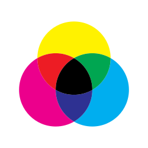

Het CMY-model

Dit model wordt gebruikt door printers. Hiermee drukken printers digitale bestanden af. De kleuren worden afgedrukt op een witte achtergrond, niet op een zwarte zoals bij het RGB-model. Hierbij worden de kleuren cyaan, magenta en geel gebruikt. Zwart kan alleen gemaakt worden doordat hij apart wordt toegevoegd (K), ofterwel het CYMK model. Zo worden er vaak 4 inktpatronen gebruikt.
Overzicht van RGB en CMY model
Rood: RGB (255,0,0) -> CMY (0,255,255)
Blauw: RGB(0,0,255) -> CMY (255,255,0)
Oranje: RGB(255,128,0) -> CMY (0,127,255)
Magenta: RGB(255,0,255) -> CMY(0,255,0)
Grijs: RGB(128,128,128) -> CMY(127,127,127)